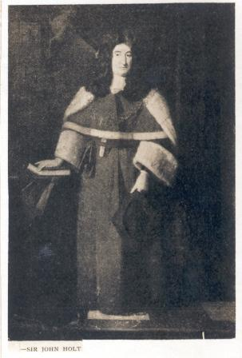

|
Biographies of Prominent People
1575 Francis Holt, of Gristlehurst, near Bury
1619 John Holt, of Stubley.
1640 Robert Holt, of Castleton.
|
|

Sir John Holt from 17 April 1689 to 5 March 1710
was Lord Chief Justice of England and Wales. He was known for being a fair judge.
He studied law at Gray's Inn in London, and was appointed to the bar in 1663.
He became King's sergeant and was knighted around 1685-1686.
In 1688 he had a prominent role in William III gaining the
throne of England, and soon after was appointed Lord Chief Justice
of the King's Bench.
|
| To read more about the Holts of
Gristlehusrst, Click here
for a chapter of local family history. A letter with details of the
ancestry of Chief-Justice Holt is interesting to read
|
|
James Maden Holt Esq. M.A. J.P., a justice of the Peace and Philanthropist,
sat in the House of Commons from 1868 for 12 years as an Independent
Conservative. For more details about the life of James
Maden Holt click
here. More family details click
here.
|
|
Alfred Holt was the most famous member of the renowned Holt
shipping dynasty of Liverpool
|
Extract from the Mersey Magazine of the Mersey Dock Board October 1924.
The Makers of Modern Liverpool,
The Holt family and
part 2 three generations
part 3
|
| Richard Durning Holt (1868 - 22 March 1941) was a British
Liberal politician and became a Member of Parliament for Hexham
between 1907 - 1918. His details.
|
|
Father Holt had great influence and is reported to have been
sent privily into Scotland in 1583 to contrive a way for invading
England in behalf of Queen Mary. To
read more.
|
| |

|
| |
|

|
|

|
| |
| |
|